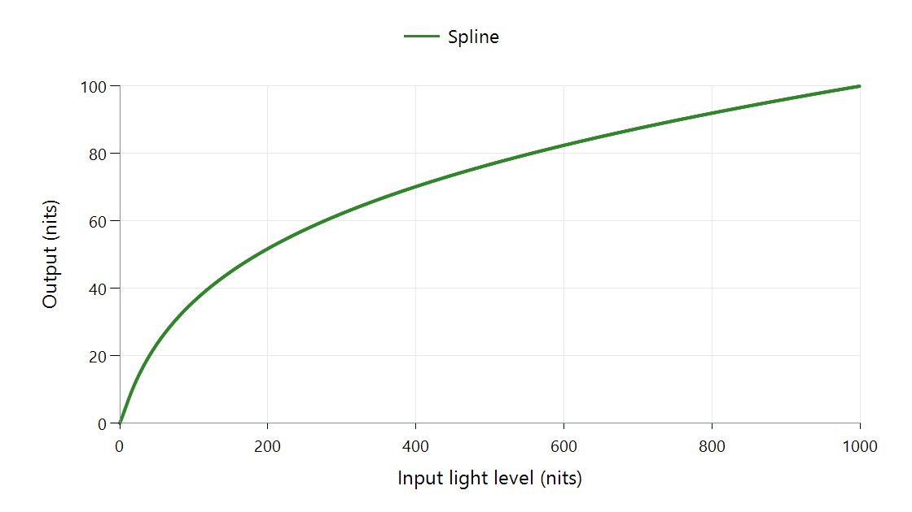

Tone Mapping Curve: Spline
A spline lets the mapper shape two parts of a brightness relationship around a selected pivot. In the plotted libplacebo implementation, a quadratic lower segment and a cubic upper segment meet with the same value and slope.

libplacebo 7.360.1 defaults, zero black, 1,000-nit input peak, 100-nit output peak, and no scene-average value. The function operates in PQ coordinates; the axes show light levels.
What is fixed and what can move?
The source and target endpoints set the range to fit. The pivot sets an input/output pair inside that range. A contrast control adjusts the slope at the pivot, while the polynomial coefficients make both segments meet their remaining constraints.
Changing the pivot's output moves that part of the scene to another brightness. Changing its input moves where the two pieces meet. Changing the slope alters nearby contrast. These are different controls over the shape, even when its endpoints remain unchanged.
| Input light | Output in the displayed example |
|---|---|
| 10 nits | About 5.98 nits |
| 100 nits | About 36.16 nits |
| 500 nits | About 76.78 nits |
| 1,000 nits | 100 nits |
The function distributes much of the available output below the highest input. A 500-nit difference from 500 to 1,000 nits becomes about 23.22 nits. Those values belong to the stated default selection, not to every spline.
Feed the pivot meaningful information
The library can select its pivot using range and scene-brightness information. A dim interior and a bright exterior can consequently receive different curves. With scene average absent, a defined fallback selection still produces a curve, as in the figure.
Scene adaptation provides and stabilizes changing information; the spline provides a form that responds to it. The mathematical join itself addresses spatial value continuity, while temporal stability depends on how its parameters change between pictures.
For an Emby comparison, identify the actual mapper and its source/target inputs. The Windows rendering path is one place where presentation can adapt the picture. The graph here explains the spline's selected brightness function within such a path.